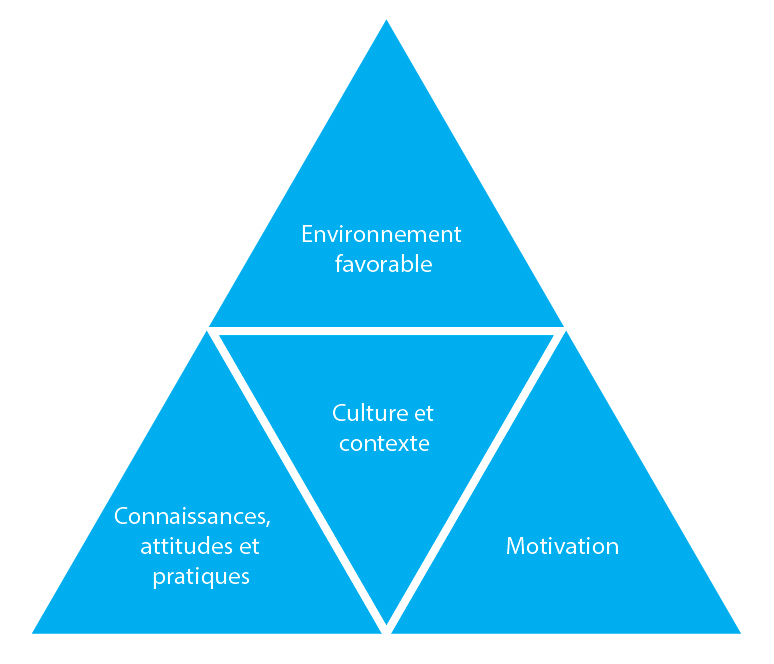

Aperçu
- Au cours d’une épidémie, il est important de travailler avec la communauté pour modifier rapidement les comportements à risque afin d’empêcher la propagation de la maladie.
- Notre objectif, dans une situation d’épidémie, est d’identifier les obstacles au changement et, en collaboration avec la communauté, de mettre au point une stratégie pour encourager les communautés à se protéger en adoptant un comportement plus sûr.
- Les comportements plus sûrs peuvent notamment consister à accepter la vaccination, le lavage des mains avec du savon aux cinq moments cruciaux, la pulvérisation régulière d’antimoustiques, l’utilisation systématique d’une moustiquaire ou l’isolement en cas de maladie.
Ce que vous devez savoir
- Les membres de votre communauté doivent être associés aux efforts visant à modifier leur comportement. La peur, le deuil, les normes sociales, les croyances culturelles et religieuses, les pratiques traditionnelles et les fausses informations sont autant d’éléments qui influencent les comportements et doivent être pris en compte pour la planification des interventions sanitaires.
- Se contenter de fournir des informations au sujet de l’épidémie ne suffira pas à modifier le comportement de la population. Tenez compte des cinq phases du changement de comportement.
- Il est important d’échanger avec les gens au sujet de leurs croyances, règles, idées et craintes relatives à la maladie, d’écouter attentivement ce qu’ils disent et de tenir compte de leur avis. Une fois que vous avez compris ce qu’ils savent, pensent et font, vous pouvez commencer à songer à influencer leur comportement. Vous pouvez décider comment transmettre à la population les informations dont vous disposez au sujet de la maladie, de ses symptômes ainsi que de la manière dont elle se propage et dont on la traite.
- Toute stratégie de mobilisation sociale ou de changement de comportement que vous utilisez doit être construite autour des intérêts de la communauté, y compris lorsque vous identifiez des solutions et des stratégies.
En quoi consiste le changement de comportement dans le cadre d’une épidémie?
Quel que soit le contexte, le changement de comportement implique trois éléments. Pour changer de comportement, les personnes doivent:
- savoir quoi, pourquoi et comment changer. Il leur faut des connaissances.
- disposer des outils, de l’accès et des capacités adaptés. Elles ont besoin d’un environnement favorable.
- être motivées à changer.
